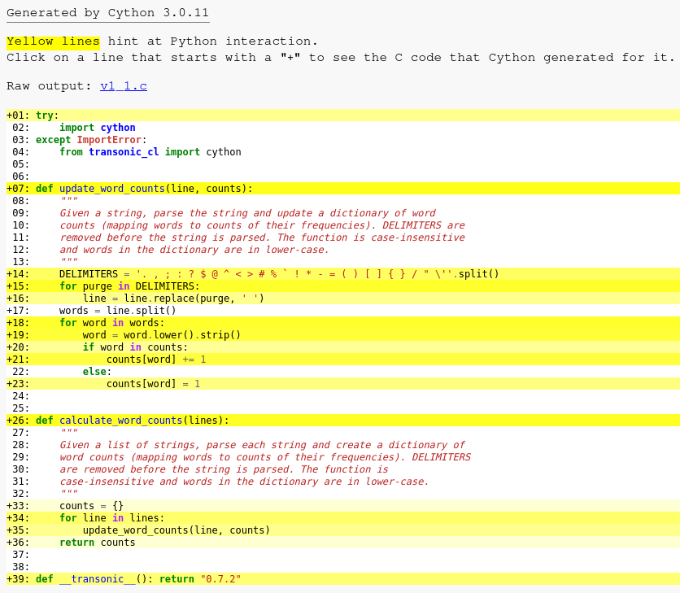

Optimize
Objectives
Optimize the most expensive function from the word-count-hpda project’s
wordcount.pyscript.Show how changes to algorithm influences the performance.
Introduce a few Python accelerators:
cython,numba,pythranMention the library
transonic
Instructor note
15 min teaching/demo
No type-along intended
Targeting the most expensive function
In the previous episode by profiling, we found out that update_word_counts
consumes around half of the CPU wall time and is called repeatedly. Here is
a snippet from profiling output.
...
53473208 function calls in 8.410 seconds
Ordered by: internal time
ncalls tottime percall cumtime percall filename:lineno(function)
1233410 4.151 0.000 7.204 0.000 source/wordcount.py:41(update_word_counts)
...
Option 1: changing the algorithm
If we look at the output from the line profiler, we can see that the following two lines are the most time-consuming.
def update_word_counts(line, counts):
"""
Given a string, parse the string and update a dictionary of word
counts (mapping words to counts of their frequencies). DELIMITERS are
removed before the string is parsed. The function is case-insensitive
and words in the dictionary are in lower-case.
"""
for purge in DELIMITERS:
line = line.replace(purge, " ")
words = line.split()
for word in words:
word = word.lower().strip()
if word in counts:
counts[word] += 1
else:
counts[word] = 1
Demo
Instead of a for loop and a str.replace we could use a single regular
expression substitution. This change would look like this
import re
# WARNING: there is a bug in the regular expression below!
DELIMITERS = re.compile(r"""[\.,;:?$@^<>#%`!\*-=\(\)\[\]\{\}/\\\\"']""")
def update_word_counts(line, counts):
"""
Given a string, parse the string and update a dictionary of word
counts (mapping words to counts of their frequencies). DELIMITERS are
removed before the string is parsed. The function is case-insensitive
and words in the dictionary are in lower-case.
"""
line = DELIMITERS.sub(" ", line)
words = line.split()
for word in words:
word = word.lower().strip()
if word in counts:
counts[word] += 1
else:
counts[word] = 1
If we run our benchmark with the original code (v0.py) and the regex version (v0_1.py),
we get
$ time python v0.py data/concat.txt processed_data/concat.dat
real 0m2,934s
user 0m2,733s
sys 0m0,191s
$ time python v0_1.py data/concat.txt processed_data/concat.dat
real 0m2,472s
user 0m2,320s
sys 0m0,147s
Summary
There is a marginal gain of ~0.5 s which amounts to a 16% performance boost.
Such changes are less maintainable, but sometime necessary.
Option 2: using an accelerator
Accelerators
The following are the few well-known accelerators for Python-Numpy applications.
Accelerator |
Compiles |
Implemented in |
Level |
Supports |
Advantage |
|---|---|---|---|---|---|
Cython |
Ahead of time |
C |
Module |
All of Python, Numpy, and C |
Generic and can also interface C,C++ |
Pythran |
Ahead of time |
C++ |
Module |
Most Python and Numpy features |
Escapes GIL always, can optimize vectorized code without loops. Can parallelize using OpenMP. |
Numba |
Just in time |
LLVM |
Function |
Most Python and Numpy features |
Specializes in Numeric codes. Has GPU support, can parallelize |
Jax |
Just in time |
C++ |
Function or Expression |
Most Python and Numpy features |
Drop-in alternative for Numpy. Designed for creating ML libraries |
Cupy |
Pre-compiled / JIT |
Cython / C / C++ |
Function or Expression |
Numpy and Scipy |
Drop-in alternative for Numpy. Supports CUDA and ROCm GPUs |
Refactoring
One complication with optimizing update_word_counts is that it is an
impure function. In other words, it has some side-effects since it:
accesses a global variable
DELIMITERS, andmutates an external dictionary
countswhich is a local variable inside the functioncalculate_word_counts.
Thus the function update_word_counts on its own can be complicated for
an accelerator to compile since the types of the external variables are unknown.
def update_word_counts(line, counts):
"""
Given a string, parse the string and update a dictionary of word
counts (mapping words to counts of their frequencies). DELIMITERS are
removed before the string is parsed. The function is case-insensitive
and words in the dictionary are in lower-case.
"""
for purge in DELIMITERS:
line = line.replace(purge, " ")
words = line.split()
for word in words:
word = word.lower().strip()
if word in counts:
counts[word] += 1
else:
counts[word] = 1
DELIMITERS = ". , ; : ? $ @ ^ < > # % ` ! * - = ( ) [ ] { } / \" '".split()
def calculate_word_counts(lines):
"""
Given a list of strings, parse each string and create a dictionary of
word counts (mapping words to counts of their frequencies). DELIMITERS
are removed before the string is parsed. The function is
case-insensitive and words in the dictionary are in lower-case.
"""
counts = {}
for line in lines:
update_word_counts(line, counts)
return counts
Cython
In this example we shall demonstrate Cython via a package called Transonic . Transonic lets you switch between Cython, Numba, Pythran and to some extent Jax using very similar syntax
To use Transonic we add decorators to functions we need to optimize. There are two decorators
@transonic.boostto create ahead-of-time (AOT) compiled modules and it requires type annotations@transonic.jitto create just-in-time (JIT) compiled modules where type is inferred on runtime
The advantage of using transonic is that you can quickly find out which accelerator works best while preserving the Python code for debugging and future development. It also abstracts away the syntax variations that Cython, Pythran etc. have.
The accelerator backend can be chosen in 3 ways:
Using an environment variable,
export TRANSONIC_BACKEND=cythonAs a parameter to the decorator,
@boost(backend="cython")As a parameter to the Transonic CLI,
transonic -b cython /path/to/file.py
We shall use the @boost decorator and the environment variable TRANSONIC_BACKEND for simplicity
Demo
We make a few changes to the code:
Pull
DELIMITERSinsideupdate_word_countsfunctionAdd
@boostdecoratorsAdd type annotations as required by transonic.
Cython has an ability to create inline functions and this is also supported in Transonic. Therefore
it is OK that update_word_counts is impure.
from transonic import boost
from transonic.typing import List, Dict
@boost(inline=True)
def update_word_counts(line: str, counts: Dict[str, int]):
"""
Given a string, parse the string and update a dictionary of word
counts (mapping words to counts of their frequencies). DELIMITERS are
removed before the string is parsed. The function is case-insensitive
and words in the dictionary are in lower-case.
"""
DELIMITERS = ". , ; : ? $ @ ^ < > # % ` ! * - = ( ) [ ] { } / \" '".split()
for purge in DELIMITERS:
line = line.replace(purge, " ")
words = line.split()
for word in words:
word = word.lower().strip()
if word in counts:
counts[word] += 1
else:
counts[word] = 1
@boost
def calculate_word_counts(lines: List[str]):
"""
Given a list of strings, parse each string and create a dictionary of
word counts (mapping words to counts of their frequencies). DELIMITERS
are removed before the string is parsed. The function is
case-insensitive and words in the dictionary are in lower-case.
"""
counts = {}
for line in lines:
update_word_counts(line, counts)
return counts
Then compile the file ./wordcount/v1_1.py
$ export TRANSONIC_BACKEND=cython
$ transonic v1_1.py
...
1 files created or updated needs to be cythonized
$ ls -1 __cython__/
build
v1_1_ee8b793c43119b782190c854a1eb2ba7.cpython-312-x86_64-linux-gnu.so
v1_1.pxd
v1_1.py
This would auto-generate a module containing only the functions to be optimized and also compiles it. While running the application, Transonic takes care of swapping the Python function with the compiled counterpart.
We are ready to benchmark this.
$ time python v1_1.py data/concat.txt processed_data/concat.dat
real 0m4,071s
user 0m4,373s
sys 0m0,288s
Summary
We see that the compiled function made the script slower! This could happen because of a few reasons
Python’s dictionary which uses hash-maps, is quite optimized and it is hard to beat it
Cython interacts with Python a lot. This can be analyzed by running
cd __cython__; cythonize --annotate v1_1.pywhich generates the following HTML page.

Pythran can be used to escape interaction the GIL, but it has a similar performance. Source code:
./wordcount/v1_2.pyand./wordcount/v1_2_pythran.py
When do we use accelerators?
An example: Astrophysics N-body problem
To simulate an N-body problem using a naive algorithm involves \(O(N^2)\) operations for each time-step.
Naive Python version
It uses a list of Numpy arrays!
import sys
import numpy as np
from itertools import combinations
from time import perf_counter
from datetime import timedelta
class Particle:
"""
A Particle has mass, position, velocity and acceleration.
"""
def __init__(self, mass, x, y, z, vx, vy, vz):
self.mass = mass
self.position = np.array([x, y, z])
self.velocity = np.array([vx, vy, vz])
self.acceleration = np.array([[0.0, 0.0, 0.0], [0.0, 0.0, 0.0]])
@property
def ke(self):
return 0.5 * self.mass * sum(v ** 2 for v in self.velocity)
class Cluster(list):
"""
A Cluster is just a list of particles with methods to accelerate and
advance them.
"""
@property
def ke(self):
return sum(particle.ke for particle in self)
@property
def energy(self):
return self.ke + self.pe
def step(self, dt):
self.__accelerate()
self.__advance_positions(dt)
self.__accelerate()
self.__advance_velocities(dt)
def __accelerate(self):
for particle in self:
particle.acceleration[1] = particle.acceleration[0]
particle.acceleration[0] = 0.0
self.pe = 0.0
for p1, p2 in combinations(self, 2):
vector = np.subtract(p1.position, p2.position)
distance = np.sqrt(np.sum(vector ** 2))
p1.acceleration[0] = (
p1.acceleration[0] - (p2.mass / distance ** 3) * vector
)
p2.acceleration[0] = (
p2.acceleration[0] + (p1.mass / distance ** 3) * vector
)
self.pe -= (p1.mass * p2.mass) / distance
def __advance_positions(self, dt):
for p in self:
p.position = (
p.position + p.velocity * dt + 0.5 * dt ** 2 * p.acceleration[0]
)
def __advance_velocities(self, dt):
for p in self:
p.velocity = (
p.velocity + 0.5 * (p.acceleration[0] + p.acceleration[1]) * dt
)
if __name__ == "__main__":
t_start = perf_counter()
tend, dt = 10.0, 0.001 # end time, timestep
cluster = Cluster()
with open(sys.argv[1]) as input_file:
for line in input_file:
# try/except is a blunt instrument to clean up input
try:
cluster.append(Particle(*[float(x) for x in line.split()[1:]]))
except:
pass
old_energy = -0.25
for step in range(1, int(tend / dt + 1)):
cluster.step(dt)
if not step % 100:
print(
f"t = {dt * step:.2f}, E = {cluster.energy:.10f}, "
f"dE/E = {(cluster.energy - old_energy) / old_energy:.10f}"
)
old_energy = cluster.energy
print(f"Final dE/E = {(cluster.energy + 0.25) / -0.25:.6e}")
print(f"run in {timedelta(seconds=perf_counter()-t_start)}")
Numpy vectorized version
from math import sqrt
from time import perf_counter
from datetime import timedelta
import numpy as np
import pandas as pd
def load_input_data(path):
df = pd.read_csv(
path, names=["mass", "x", "y", "z", "vx", "vy", "vz"], delimiter=r"\s+"
)
# warning: copy() is for Pythran...
masses = df["mass"].values.copy()
positions = df.loc[:, ["x", "y", "z"]].values.copy()
velocities = df.loc[:, ["vx", "vy", "vz"]].values.copy()
return masses, positions, velocities
def advance_positions(positions, velocities, accelerations, time_step):
positions += time_step * velocities + 0.5 * time_step ** 2 * accelerations
def advance_velocities(velocities, accelerations, accelerations1, time_step):
velocities += 0.5 * time_step * (accelerations + accelerations1)
def compute_accelerations(accelerations, masses, positions):
nb_particules = masses.size
for index_p0 in range(nb_particules - 1):
position0 = positions[index_p0]
mass0 = masses[index_p0]
for index_p1 in range(index_p0 + 1, nb_particules):
mass1 = masses[index_p1]
vector = position0 - positions[index_p1]
distance = sqrt(sum(vector ** 2))
coef = 1.0 / distance ** 3
accelerations[index_p0] -= coef * mass1 * vector
accelerations[index_p1] += coef * mass0 * vector
def loop(time_step, nb_steps, masses, positions, velocities):
accelerations = np.zeros_like(positions)
accelerations1 = np.zeros_like(positions)
compute_accelerations(accelerations, masses, positions)
time = 0.0
energy0, _, _ = compute_energies(masses, positions, velocities)
energy_previous = energy0
for step in range(nb_steps):
advance_positions(positions, velocities, accelerations, time_step)
# swap acceleration arrays
accelerations, accelerations1 = accelerations1, accelerations
accelerations.fill(0)
compute_accelerations(accelerations, masses, positions)
advance_velocities(velocities, accelerations, accelerations1, time_step)
time += time_step
if not step % 100:
energy, _, _ = compute_energies(masses, positions, velocities)
print(
f"t = {time_step * step:5.2f}, E = {energy:.10f}, "
f"dE/E = {(energy - energy_previous) / energy_previous:+.10f}"
)
energy_previous = energy
return energy, energy0
def compute_kinetic_energy(masses, velocities):
return 0.5 * np.sum(masses * np.sum(velocities ** 2, 1))
def compute_potential_energy(masses, positions):
nb_particules = masses.size
pe = 0.0
for index_p0 in range(nb_particules - 1):
for index_p1 in range(index_p0 + 1, nb_particules):
mass0 = masses[index_p0]
mass1 = masses[index_p1]
vector = positions[index_p0] - positions[index_p1]
distance = sqrt(sum(vector ** 2))
pe -= (mass0 * mass1) / distance
return pe
def compute_energies(masses, positions, velocities):
energy_kin = compute_kinetic_energy(masses, velocities)
energy_pot = compute_potential_energy(masses, positions)
return energy_kin + energy_pot, energy_kin, energy_pot
if __name__ == "__main__":
import sys
t_start = perf_counter()
try:
time_end = float(sys.argv[2])
except IndexError:
time_end = 10.
time_step = 0.001
nb_steps = int(time_end / time_step) + 1
path_input = sys.argv[1]
masses, positions, velocities = load_input_data(path_input)
energy, energy0 = loop(time_step, nb_steps, masses, positions, velocities)
print(f"Final dE/E = {(energy - energy0) / energy0:.6e}")
print(
f"{nb_steps} time steps run in {timedelta(seconds=perf_counter()-t_start)}"
)
Demo
Data for 16-bodies: ./nbabel/input16
Naive Python version:
./nbabel/bench0.pyNumpy vectorized version:
./nbabel/bench_numpy_highlevel.pyNumpy vectorized version + JIT compilation using Transonic and Pythran:
./nbabel/bench_numpy_highlevel_jit.py
$ time python bench0.py input16
$ time bench_numpy_highlevel.py input16
$ export TRANSONIC_BACKEND=pythran
$ time bench_numpy_highlevel_jit.py input16 # Rerun after Pythran module is compiled
Solution
$ time python bench0.py input16
...
run in 0:00:12.637249
$ time bench_numpy_highlevel.py input16
...
10001 time steps run in 0:00:04.297485
$ export TRANSONIC_BACKEND=pythran
$ time bench_numpy_highlevel_jit.py input16 # Rerun after Pythran module is compiled
...
10001 time steps run in 0:00:00.042925
~300x speedup by using Pythran!
Keypoints
Algortihmic optimizations are often better
Accelerators work well with contiguous data structures
The word-count problem is a poor candidate, but when it involves contiguous data structures such as arrays of numbers these accelerators can give amazing performance boosts. See here: